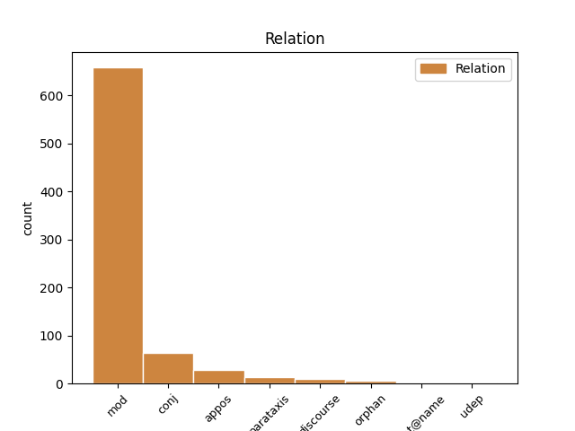
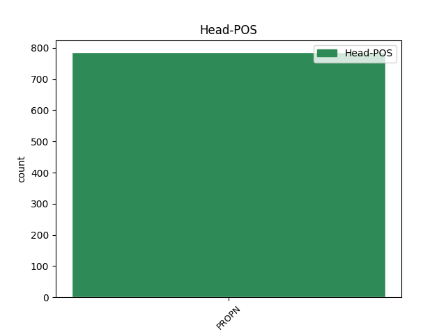
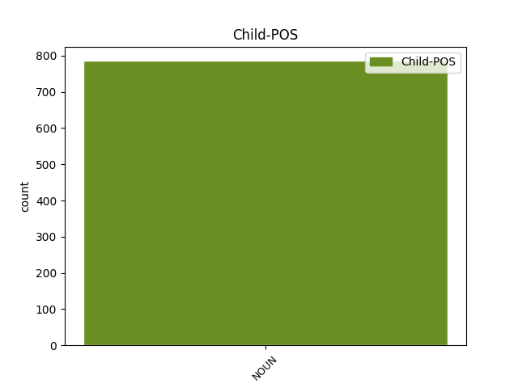

Distribution of features within this leaf



Agreement Rules sorted by frequency.
- When the dependent token is the modifer(mod) of the head token, and the head token is PROPN and the dependent token is NOUN.
1 Kā _ _ _ _ 0 _ _ _
2 atzīst _ _ _ _ 0 _ _ _
3 vairāki _ _ _ _ 0 _ _ _
4 VD _ _ _ _ 0 _ _ _
5 teologi _ _ _ _ 0 _ _ _
6 , _ _ _ _ 0 _ _ _
7 VD _ _ _ _ 0 _ _ _
8 tekstiem _ _ _ _ 0 _ _ _
9 piemērotāka _ _ _ _ 0 _ _ _
10 ir _ _ _ _ 0 _ _ _
11 skandināvu _ _ _ _ 0 _ _ _
12 pētnieka pētnieks NOUN ncmsg1 Case=Gen|Gender=Masc|Number=Sing 13 mod _ LvtbNodeId=a-z99-p16s1w12
13 Johana Johans PROPN npmsg1 Case=Gen|Gender=Masc|Number=Sing 0 _ _ _
14 Galtunga _ _ _ _ 0 _ _ _
15 ( _ _ _ _ 0 _ _ _
16 Galtung _ _ _ _ 0 _ _ _
17 ) _ _ _ _ 0 _ _ _
18 piedāvātā _ _ _ _ 0 _ _ _
19 teorija _ _ _ _ 0 _ _ _
20 par _ _ _ _ 0 _ _ _
21 vardarbību _ _ _ _ 0 _ _ _
22 , _ _ _ _ 0 _ _ _
23 kurā _ _ _ _ 0 _ _ _
24 izšķir _ _ _ _ 0 _ _ _
25 tiešu _ _ _ _ 0 _ _ _
26 , _ _ _ _ 0 _ _ _
27 strukturālu _ _ _ _ 0 _ _ _
28 un _ _ _ _ 0 _ _ _
29 kultūras _ _ _ _ 0 _ _ _
30 vardarbību _ _ _ _ 0 _ _ _
31 . _ _ _ _ 0 _ _ _
1 To _ _ _ _ 0 _ _ _
2 , _ _ _ _ 0 _ _ _
3 ka _ _ _ _ 0 _ _ _
4 ģeogrāfiskas _ _ _ _ 0 _ _ _
5 dabas _ _ _ _ 0 _ _ _
6 faktori _ _ _ _ 0 _ _ _
7 ietekmē _ _ _ _ 0 _ _ _
8 skolotāju _ _ _ _ 0 _ _ _
9 trūkumu _ _ _ _ 0 _ _ _
10 , _ _ _ _ 0 _ _ _
11 atzīmē _ _ _ _ 0 _ _ _
12 arī _ _ _ _ 0 _ _ _
13 See _ _ _ _ 0 _ _ _
14 B. _ _ _ _ 0 _ _ _
15 H. _ _ _ _ 0 _ _ _
16 , _ _ _ _ 0 _ _ _
17 Gorard _ _ _ _ 0 _ _ _
18 St. _ _ _ _ 0 _ _ _
19 un _ _ _ _ 0 _ _ _
20 White _ _ _ _ 0 _ _ _
21 P. _ _ _ _ 0 _ _ _
22 , _ _ _ _ 0 _ _ _
23 kā _ _ _ _ 0 _ _ _
24 piemēru _ _ _ _ 0 _ _ _
25 minot _ _ _ _ 0 _ _ _
26 situāciju _ _ _ _ 0 _ _ _
27 Londonā Londona PROPN npfsl4 Case=Loc|Gender=Fem|Number=Sing 0 _ _ _
28 un _ _ _ _ 0 _ _ _
29 tās _ _ _ _ 0 _ _ _
30 apkārtnē apkārtne NOUN ncfsl5 Case=Loc|Gender=Fem|Number=Sing 27 conj _ LvtbNodeId=a-z46-p14s2w30
31 ( _ _ _ _ 0 _ _ _
32 See _ _ _ _ 0 _ _ _
33 , _ _ _ _ 0 _ _ _
34 2004 _ _ _ _ 0 _ _ _
35 ) _ _ _ _ 0 _ _ _
36 . _ _ _ _ 0 _ _ _
1 Informāciju _ _ _ _ 0 _ _ _
2 sagatavoja _ _ _ _ 0 _ _ _
3 Signe Signe PROPN npfsn5 Case=Nom|Gender=Fem|Number=Sing 0 _ _ _
4 Valtiņa _ _ _ _ 0 _ _ _
5 , _ _ _ _ 0 _ _ _
6 Latvijas _ _ _ _ 0 _ _ _
7 Nacionālās _ _ _ _ 0 _ _ _
8 bibliotēkas _ _ _ _ 0 _ _ _
9 sabiedrisko _ _ _ _ 0 _ _ _
10 attiecību _ _ _ _ 0 _ _ _
11 speciāliste speciāliste NOUN ncfsn5 Case=Nom|Gender=Fem|Number=Sing 3 appos _ LvtbNodeId=a-p3774-p3s1w11|SpaceAfter=No
12 . _ _ _ _ 0 _ _ _
1 Kolliju _ _ _ _ 0 _ _ _
2 gleznojis _ _ _ _ 0 _ _ _
3 arī _ _ _ _ 0 _ _ _
4 mākslinieks _ _ _ _ 0 _ _ _
5 Edvīns Edvīns PROPN npmsn1 Case=Nom|Gender=Masc|Number=Sing 0 _ _ _
6 Lendzīrs _ _ _ _ 0 _ _ _
7 ( _ _ _ _ 0 _ _ _
8 1802. _ _ _ _ 0 _ _ _
9 - _ _ _ _ 0 _ _ _
10 1873. _ _ _ _ 0 _ _ _
11 gads gads NOUN ncmsn1 Case=Nom|Gender=Masc|Number=Sing 5 parataxis _ LvtbNodeId=a-p5232-p13s6w11|SpaceAfter=No
12 ) _ _ _ _ 0 _ _ _
13 . _ _ _ _ 0 _ _ _
1 Tas _ _ _ _ 0 _ _ _
2 , _ _ _ _ 0 _ _ _
3 kurš _ _ _ _ 0 _ _ _
4 to _ _ _ _ 0 _ _ _
5 saņem _ _ _ _ 0 _ _ _
6 , _ _ _ _ 0 _ _ _
7 piemēram piemērs NOUN ncmsd1 Case=Dat|Gender=Masc|Number=Sing 9 discourse _ LvtbNodeId=a-p3762-p48s13w7|SpaceAfter=No
8 , _ _ _ _ 0 _ _ _
9 Uldis Uldis PROPN npmsn2 Case=Nom|Gender=Masc|Number=Sing 0 _ _ _
10 Bērziņš _ _ _ _ 0 _ _ _
11 , _ _ _ _ 0 _ _ _
12 tā _ _ _ _ 0 _ _ _
13 ir _ _ _ _ 0 _ _ _
14 ļoti _ _ _ _ 0 _ _ _
15 adekvāta _ _ _ _ 0 _ _ _
16 lieta _ _ _ _ 0 _ _ _
17 . _ _ _ _ 0 _ _ _
1 Atsevišķos _ _ _ _ 0 _ _ _
2 gadījumos _ _ _ _ 0 _ _ _
3 baznīcu _ _ _ _ 0 _ _ _
4 materiālos _ _ _ _ 0 _ _ _
5 rodamas _ _ _ _ 0 _ _ _
6 ziņas _ _ _ _ 0 _ _ _
7 par _ _ _ _ 0 _ _ _
8 stiklinieku _ _ _ _ 0 _ _ _
9 , _ _ _ _ 0 _ _ _
10 kurš _ _ _ _ 0 _ _ _
11 ēkai _ _ _ _ 0 _ _ _
12 izgatavojis _ _ _ _ 0 _ _ _
13 logus _ _ _ _ 0 _ _ _
14 , _ _ _ _ 0 _ _ _
15 kā _ _ _ _ 0 _ _ _
16 piemēram _ _ _ _ 0 _ _ _
17 , _ _ _ _ 0 _ _ _
18 dokumentējums _ _ _ _ 0 _ _ _
19 ( _ _ _ _ 0 _ _ _
20 RPM _ _ _ _ 0 _ _ _
21 arhīvs _ _ _ _ 0 _ _ _
22 , _ _ _ _ 0 _ _ _
23 Nr. _ _ _ _ 0 _ _ _
24 7049 _ _ _ _ 0 _ _ _
25 ) _ _ _ _ 0 _ _ _
26 , _ _ _ _ 0 _ _ _
27 ka _ _ _ _ 0 _ _ _
28 Burtnieku _ _ _ _ 0 _ _ _
29 baznīcas _ _ _ _ 0 _ _ _
30 logus _ _ _ _ 0 _ _ _
31 1683. _ _ _ _ 0 _ _ _
32 gadā _ _ _ _ 0 _ _ _
33 gatavojis _ _ _ _ 0 _ _ _
34 Ambrozijs _ _ _ _ 0 _ _ _
35 Gabriēls _ _ _ _ 0 _ _ _
36 Valmierā _ _ _ _ 0 _ _ _
37 , _ _ _ _ 0 _ _ _
38 bet _ _ _ _ 0 _ _ _
39 1687. _ _ _ _ 0 _ _ _
40 gadā gads NOUN ncmsl1 Case=Loc|Gender=Masc|Number=Sing 42 orphan _ LvtbNodeId=a-z48-p28s10w40
41 - _ _ _ _ 0 _ _ _
42 Pēteris Pēteris PROPN npmsn2 Case=Nom|Gender=Masc|Number=Sing 0 _ _ _
43 Kunsts _ _ _ _ 0 _ _ _
44 . _ _ _ _ 0 _ _ _
1 Zanes _ _ _ _ 0 _ _ _
2 tēvs _ _ _ _ 0 _ _ _
3 Jānis Jānis PROPN npmsn2 Case=Nom|Gender=Masc|Number=Sing 0 _ _ _
4 Dzenis dzenis NOUN ncmsn2 Case=Nom|Gender=Masc|Number=Sing 3 flat@name _ LvtbNodeId=a-p633-p9s4w4
5 šobrīd _ _ _ _ 0 _ _ _
6 ir _ _ _ _ 0 _ _ _
7 arī _ _ _ _ 0 _ _ _
8 viņas _ _ _ _ 0 _ _ _
9 treneris _ _ _ _ 0 _ _ _
10 . _ _ _ _ 0 _ _ _
1 Te _ _ _ _ 0 _ _ _
2 dzīvo _ _ _ _ 0 _ _ _
3 arī _ _ _ _ 0 _ _ _
4 runcis _ _ _ _ 0 _ _ _
5 , _ _ _ _ 0 _ _ _
6 kuram _ _ _ _ 0 _ _ _
7 vārdā vārds NOUN ncmsl1 Case=Loc|Gender=Masc|Number=Sing 8 udep _ LvtbNodeId=a-p10421-p4s2w7
8 Francis Francis PROPN npmsn2 Case=Nom|Gender=Masc|Number=Sing 0 _ _ _
9 un _ _ _ _ 0 _ _ _
10 kuram _ _ _ _ 0 _ _ _
11 radi _ _ _ _ 0 _ _ _
12 dzīvo _ _ _ _ 0 _ _ _
13 Parīzē _ _ _ _ 0 _ _ _
14 . _ _ _ _ 0 _ _ _
Disagree Examples:
1 Kāpēc _ _ _ _ 0 _ _ _
2 , _ _ _ _ 0 _ _ _
3 pēc _ _ _ _ 0 _ _ _
4 Tavām _ _ _ _ 0 _ _ _
5 domām _ _ _ _ 0 _ _ _
6 , _ _ _ _ 0 _ _ _
7 tik _ _ _ _ 0 _ _ _
8 ļoti _ _ _ _ 0 _ _ _
9 atšķiras _ _ _ _ 0 _ _ _
10 Tomasa Tomass PROPN npmsg1 Case=Gen|Gender=Masc|Number=Sing 0 _ _ _
11 un _ _ _ _ 0 _ _ _
12 māmiņas māmiņa NOUN ncfsg4 Case=Gen|Gender=Fem|Number=Sing 10 conj _ LvtbNodeId=a-d200-p92s1w12
13 reakcija _ _ _ _ 0 _ _ _
14 ? _ _ _ _ 0 _ _ _
1 Es _ _ _ _ 0 _ _ _
2 turu _ _ _ _ 0 _ _ _
3 rokās _ _ _ _ 0 _ _ _
4 mazo _ _ _ _ 0 _ _ _
5 Luīzi Luīze PROPN npfsa5 Case=Acc|Gender=Fem|Number=Sing 0 _ _ _
6 , _ _ _ _ 0 _ _ _
7 siltu _ _ _ _ 0 _ _ _
8 , _ _ _ _ 0 _ _ _
9 aizmigušu _ _ _ _ 0 _ _ _
10 kunkulīti kunkulītis NOUN ncmsa2 Case=Acc|Gender=Masc|Number=Sing 5 appos _ LvtbNodeId=a-d27-p25s3w10|SpaceAfter=No
11 , _ _ _ _ 0 _ _ _
12 kas _ _ _ _ 0 _ _ _
13 smaržo _ _ _ _ 0 _ _ _
14 pēc _ _ _ _ 0 _ _ _
15 piena _ _ _ _ 0 _ _ _
16 un _ _ _ _ 0 _ _ _
17 medus _ _ _ _ 0 _ _ _
18 , _ _ _ _ 0 _ _ _
19 Patrīcija _ _ _ _ 0 _ _ _
20 man _ _ _ _ 0 _ _ _
21 blakus _ _ _ _ 0 _ _ _
22 čalo _ _ _ _ 0 _ _ _
23 par _ _ _ _ 0 _ _ _
24 visām _ _ _ _ 0 _ _ _
25 iespējamām _ _ _ _ 0 _ _ _
26 ķermeņa _ _ _ _ 0 _ _ _
27 uzlabošanas _ _ _ _ 0 _ _ _
28 operācijām _ _ _ _ 0 _ _ _
29 ( _ _ _ _ 0 _ _ _
30 " _ _ _ _ 0 _ _ _
31 Tev _ _ _ _ 0 _ _ _
32 NOTEIKTI _ _ _ _ 0 _ _ _
33 vajadzēs _ _ _ _ 0 _ _ _
34 zaļākas _ _ _ _ 0 _ _ _
35 acis _ _ _ _ 0 _ _ _
36 ! _ _ _ _ 0 _ _ _
37 " _ _ _ _ 0 _ _ _
38 ) _ _ _ _ 0 _ _ _
39 , _ _ _ _ 0 _ _ _
40 un _ _ _ _ 0 _ _ _
41 pat _ _ _ _ 0 _ _ _
42 mani _ _ _ _ 0 _ _ _
43 bērni _ _ _ _ 0 _ _ _
44 Džonatans _ _ _ _ 0 _ _ _
45 un _ _ _ _ 0 _ _ _
46 Beatrise _ _ _ _ 0 _ _ _
47 ir _ _ _ _ 0 _ _ _
48 iegrimuši _ _ _ _ 0 _ _ _
49 sarunā _ _ _ _ 0 _ _ _
50 , _ _ _ _ 0 _ _ _
51 kas _ _ _ _ 0 _ _ _
52 droši _ _ _ _ 0 _ _ _
53 vien _ _ _ _ 0 _ _ _
54 drīz _ _ _ _ 0 _ _ _
55 atkal _ _ _ _ 0 _ _ _
56 pāraugs _ _ _ _ 0 _ _ _
57 strīdā _ _ _ _ 0 _ _ _
58 , _ _ _ _ 0 _ _ _
59 un _ _ _ _ 0 _ _ _
60 velti _ _ _ _ 0 _ _ _
61 viņi _ _ _ _ 0 _ _ _
62 pūlas _ _ _ _ 0 _ _ _
63 man _ _ _ _ 0 _ _ _
64 , _ _ _ _ 0 _ _ _
65 vecai _ _ _ _ 0 _ _ _
66 sievietei _ _ _ _ 0 _ _ _
67 , _ _ _ _ 0 _ _ _
68 iestāstīt _ _ _ _ 0 _ _ _
69 , _ _ _ _ 0 _ _ _
70 ka _ _ _ _ 0 _ _ _
71 šie _ _ _ _ 0 _ _ _
72 strīdi _ _ _ _ 0 _ _ _
73 viņiem _ _ _ _ 0 _ _ _
74 ir _ _ _ _ 0 _ _ _
75 nepieciešami _ _ _ _ 0 _ _ _
76 kā _ _ _ _ 0 _ _ _
77 zivij _ _ _ _ 0 _ _ _
78 ūdens _ _ _ _ 0 _ _ _
79 . _ _ _ _ 0 _ _ _
1 Pēteris _ _ _ _ 0 _ _ _
2 , _ _ _ _ 0 _ _ _
3 kaimiņu _ _ _ _ 0 _ _ _
4 vientuļnieks _ _ _ _ 0 _ _ _
5 , _ _ _ _ 0 _ _ _
6 kušinot _ _ _ _ 0 _ _ _
7 lēni _ _ _ _ 0 _ _ _
8 veda _ _ _ _ 0 _ _ _
9 zirgu _ _ _ _ 0 _ _ _
10 , _ _ _ _ 0 _ _ _
11 aiz _ _ _ _ 0 _ _ _
12 ratiem _ _ _ _ 0 _ _ _
13 cienīgi _ _ _ _ 0 _ _ _
14 soļoja _ _ _ _ 0 _ _ _
15 Adalberts _ _ _ _ 0 _ _ _
16 , _ _ _ _ 0 _ _ _
17 tad _ _ _ _ 0 _ _ _
18 Helēna Helēna PROPN npfsn4 Case=Nom|Gender=Fem|Number=Sing 0 _ _ _
19 un _ _ _ _ 0 _ _ _
20 tad _ _ _ _ 0 _ _ _
21 visi _ _ _ _ 0 _ _ _
22 septiņi _ _ _ _ 0 _ _ _
23 vāķētāji vāķētājs NOUN ncmpn1 Case=Nom|Gender=Masc|Number=Plur 18 conj _ LvtbNodeId=a-d28-p171s2w23|SpaceAfter=No
24 . _ _ _ _ 0 _ _ _
1 Ļaužu _ _ _ _ 0 _ _ _
2 tūkstoši _ _ _ _ 0 _ _ _
3 plūst _ _ _ _ 0 _ _ _
4 uz _ _ _ _ 0 _ _ _
5 Sporta _ _ _ _ 0 _ _ _
6 manēžu _ _ _ _ 0 _ _ _
7 , _ _ _ _ 0 _ _ _
8 kur _ _ _ _ 0 _ _ _
9 notiek _ _ _ _ 0 _ _ _
10 rokoperas rokopera NOUN ncfsg4 Case=Gen|Gender=Fem|Number=Sing 11 mod _ LvtbNodeId=a-d52-p21s4w10
11 Lāčplēsis Lāčplēsis PROPN npmsn2 Case=Nom|Gender=Masc|Number=Sing 0 _ _ _
12 izrādes _ _ _ _ 0 _ _ _
13 . _ _ _ _ 0 _ _ _
1 Vienīgi _ _ _ _ 0 _ _ _
2 ciematā _ _ _ _ 0 _ _ _
3 , _ _ _ _ 0 _ _ _
4 kura _ _ _ _ 0 _ _ _
5 nomalē _ _ _ _ 0 _ _ _
6 bija _ _ _ _ 0 _ _ _
7 mitinājusies _ _ _ _ 0 _ _ _
8 Sabīne _ _ _ _ 0 _ _ _
9 , _ _ _ _ 0 _ _ _
10 izveidojās _ _ _ _ 0 _ _ _
11 slepena _ _ _ _ 0 _ _ _
12 organizācija organizācija NOUN ncfsn4 Case=Nom|Gender=Fem|Number=Sing 14 mod _ LvtbNodeId=a-d53-p31s11w12
13 « _ _ _ _ 0 _ _ _
14 Skuiviņziņi Skuiviņziņi PROPN npmdn2 Case=Nom|Gender=Masc|Number=Ptan 0 _ _ _
15 » _ _ _ _ 0 _ _ _
16 , _ _ _ _ 0 _ _ _
17 kura _ _ _ _ 0 _ _ _
18 krāja _ _ _ _ 0 _ _ _
19 un _ _ _ _ 0 _ _ _
20 interpretēja _ _ _ _ 0 _ _ _
21 zināšanas _ _ _ _ 0 _ _ _
22 par _ _ _ _ 0 _ _ _
23 Skuiviņu _ _ _ _ 0 _ _ _
24 . _ _ _ _ 0 _ _ _